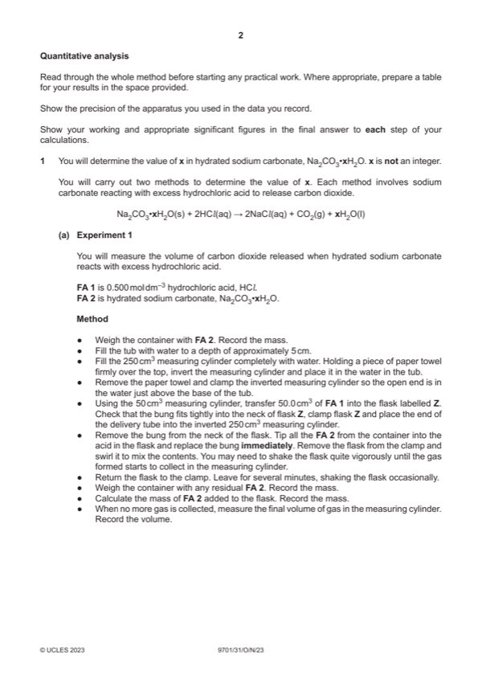
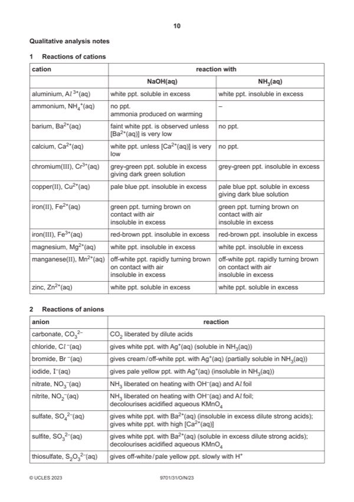

Question 1

Original paper page 2

Original paper page 10
Part 1(a) — solution
I Appropriate headings and units for recorded data in the space provided. 3
(Mass of) container + FA 2
(Mass of) container (+ residual FA 2)
(Mass of) FA 2 (used)
(Volume of) carbon dioxide
Mass units: / g or in g or (g) or g by every reading
Volume units: / cm3 or in cm3 or (cm3) or cm3 by every reading
II Balance readings recorded to same number of dp (2 or 3)
and
volumes given as integers
and
correctly calculates:
mass of solid / FA2 used and volume of gas collected
III Volume of gas collected in range 100–200 cm3
Mark points
- Include the ideas shown in the solution above.
Part 1(b)(i) — solution
- amount CO2 = volume of gas / 24000
Mark points
- amount CO2 = volume of gas / 24000
Part 1(b)(ii) — solution
- Mr = mass of FA 2 / amount Na2CO3 from (i)
Mark points
- Mr = mass of FA 2 / amount Na2CO3 from (i)
Part 1(b)(iii) — solution
- [M1] Mr of xH2O = Mr (from (ii)) – 106
- [M2] x = Mr of xH2O / 18
Mark points
- [M1] Mr of xH2O = Mr (from (ii)) – 106
- [M2] x = Mr of xH2O / 18
Part 1(c)(i) — solution
It is an improvement and carbon dioxide is less soluble (if water is hot) 1
Mark points
- Include the ideas shown in the solution above.
Part 1(c)(ii) — solution
Amount of carbon dioxide / sodium carbonate is more, (Mr is less) so x is smaller 1
2023 Page 5 of 9
9701/31 Cambridge International AS & A Level – Mark Scheme October/November 2023
Mark points
- Include the ideas shown in the solution above.
Part 1(d) — solution
- two burette readings and titre for rough titration
- initial and final burette readings for two (or more) accurate titrations
- initial / start and (burette) reading / volume
- final / end and (burette) reading / volume
- titre or volume / FA 3 and used / added
Mark points
- two burette readings and titre for rough titration
- initial and final burette readings for two (or more) accurate titrations
- initial / start and (burette) reading / volume
- final / end and (burette) reading / volume
- titre or volume / FA 3 and used / added
Part 1(e) — solution
- Candidate must take the average of two (or more) titres that are within a total spread of not more than 0.20 cm3
- Working/ explanation must be shown or ticks must be put next to the two (or more) accurate readings selected
- The mean should be quoted to 2 dp and be rounded to the nearest 0.01 cm3
Mark points
- Candidate must take the average of two (or more) titres that are within a total spread of not more than 0.20 cm3
- Working/ explanation must be shown or ticks must be put next to the two (or more) accurate readings selected
- The mean should be quoted to 2 dp and be rounded to the nearest 0.01 cm3
Part 1(f)(i) — solution
Answers to (ii) and (iii) given to 3–4 sf 1
Mark points
- Include the ideas shown in the solution above.
Part 1(f)(ii) — solution
- Amount of HCl = 0.1 volume (e) / 1000
Mark points
- Amount of HCl = 0.1 volume (e) / 1000
Part 1(f)(iii) — solution
- Amount Na2CO3•xH2O = (ii) / 2
Mark points
- Amount Na2CO3•xH2O = (ii) / 2
Part 1(f)(iv) — solution
- Mr = 14.30 / (iii)
- Mr of xH2O = Mr – 106
- x = Mr of xH2O / 18
Mark points
- Mr = 14.30 / (iii)
- Mr of xH2O = Mr – 106
- x = Mr of xH2O / 18
Part 1(g)(i) — solution
- Uncertainty in a single reading = 0.001 or 0.0005
Mark points
- Uncertainty in a single reading = 0.001 or 0.0005
Part 1(g)(ii) — solution
Correctly uses 1
(100 + final answer to (g)(i)) / 100 242.2
or
(14.3 + 2 (single) uncertainty) / answer f(iii)
2023 Page 7 of 9
9701/31 Cambridge International AS & A Level – Mark Scheme October/November 2023
FA 6 NaNO3 FA 7 NaNO2 FA 8 NH4Cl FA 9 KMnO4 FA 10 MnCl2 or MnSO4
Mark points
- Include the ideas shown in the solution above.